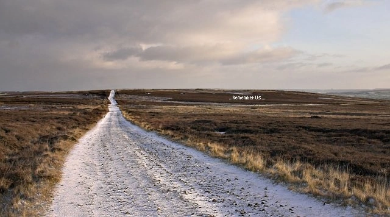

SCP-2000
THAUMIEL
Deus Ex Machina - A massive underground facility capable of cloning humanity in the event of an XK-Class end-of-the-world scenario. Uses genetic material preserved from previous cycles to recreate human civilization.